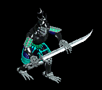
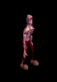
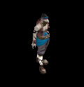
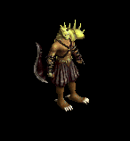
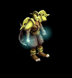
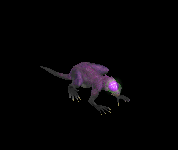
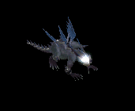
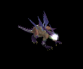
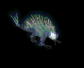
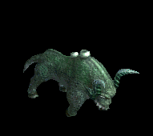

爪 をドロップするmob一覧
一覧ページへ
| 骸骨騎士 | アンデット | 一般3 | |||||||
|---|---|---|---|---|---|---|---|---|---|
 | 鈍器(360) | スリング(240) | 矢(360) | 職業鎧(200) | 爪(180) | 能力向上1(140) | 魔弾(360) | ||
| デスナイト | アンデット | セミ1 | |||||||
 | 鈍器(390) | 牙(260) | 弾(390) | 鎧(220) | 爪(200) | 能力向上1(160) | 双剣(260) | ||
| 地獄の騎士 | アンデット | ボス1 | |||||||
|  | 鈍器(470) | ステッキ(310) | 矢(470) | 鎧(260) | 爪(240) | 能力向上1(190) | 魔弾(470) | ||
| リビングデッド | アンデット | 一般1 | |||||||
 | 投擲(410) | 牙(270) | イベント(410) | 腰(230) | 爪(210) | 帰還(160) | 双剣(270) | ||
| グール | アンデット | 一般2 | |||||||
|  | 投擲(380) | スリング(250) | イベント(380) | 足(210) | 爪(190) | 帰還(150) | |||
| ゾンビ | アンデット | 一般3 | |||||||
 | 投擲(360) | 牙(240) | イベント(360) | 兜・帽子(200) | 爪(180) | 帰還(140) | 双剣(240) | ||
| スプーク | アンデット | セミ1 | |||||||
 | 投擲(390) | スリング(260) | 状態異常回復1(390) | 腰(220) | 爪(200) | 帰還(160) | |||
| デスピンサー | アンデット | ボス1 | |||||||
 | 投擲(470) | 牙(310) | 状態異常回復1(470) | 鎧(260) | 爪(240) | 帰還(190) | 双剣(310) | ||
| ローグ | 人間 | 一般2 | |||||||
 | 投擲(380) | ステッキ(250) | 鍵(10) | 職業鎧(210) | 爪(190) | 特殊1(150) | |||
| スナッチャー | 人間 | 一般3 | |||||||
 | 投擲(360) | ステッキ(140) | 鍵(30) | 職業鎧(200) | 爪(180) | 特殊1(140) | |||
| ロバー | 人間 | セミ1 | |||||||
 | 投擲(390) | ステッキ(260) | 弾(390) | 職業鎧(220) | 爪(200) | 特殊1(160) | |||
| アサシン | 人間 | セミ2 | |||||||
 | 投擲(420) | ステッキ(280) | 矢(420) | 職業鎧(230) | 爪(210) | 特殊1(170) | 魔弾(420) | ||
| ブラックメイジ | 人間 | 一般4 | |||||||
 | 杖(300) | スリング(200) | 弾(300) | グローブ(170) | 爪(150) | 宝石(120) | 本(300) | ||
| キクロップス | 人間 | セミ1 | |||||||
 | スリング(390) | 杖(260) | 弾(390) | 足(220) | 爪(200) | 帰還(160) | 本(260) | ||
| コボルト | 悪魔 | 一般1 | |||||||
 | 牙(410) | スリング(270) | 弾(410) | 腰(230) | 爪(210) | 肩刺青(120) | 双剣(410) | ||
| グレムリン | 悪魔 | 一般2 | |||||||
 | 牙(380) | スリング(250) | 弾(380) | 腰(210) | 爪(190) | 肩刺青(130) | 双剣(380) | ||
| ゴブリン | 悪魔 | 一般3 | |||||||
 | 牙(360) | スリング(240) | 弾(360) | 腰(200) | 爪(180) | 肩刺青(140) | 双剣(360) | ||
| ファミリア | 悪魔 | 一般4 | |||||||
 | 牙(300) | スリング(200) | 弾(300) | 腰(170) | 爪(150) | 肩刺青(150) | 双剣(300) | ||
| インプ | 悪魔 | セミ1 | |||||||
 | 牙(390) | スリング(260) | 弾(390) | 腰(220) | 爪(200) | 肩刺青(160) | 双剣(390) | ||
| ブレイマ | 悪魔 | セミ3 | |||||||
 | 槍(450) | 片手剣(300) | 弾(450) | 職業鎧(250) | 爪(230) | 特殊1(180) | クロー(300) | 箒(450) | |
| ストーンキーパー | 悪魔 | ボス2 | |||||||
 | none(490) | 片手剣(330) | 鍵(490) | 足(270) | 爪(250) | 宝石(200) | クロー(330) | ||
| クラブシェル | 動物 | 一般1 | |||||||
 | 投擲(410) | 両手剣(270) | 盾(410) | 足(230) | 爪(210) | 帰還(160) | 鎌(270) | ||
| サイドウォーカー | 動物 | 一般3 | |||||||
 | 投擲(360) | 両手剣(240) | 盾(360) | 足(200) | 爪(180) | 宝石(140) | 鎌(240) | ||
| キャンサー | 動物 | ボス1 | |||||||
 | 投擲(470) | 両手剣(310) | 状態異常回復1(470) | 腰(260) | 爪(240) | 宝石(190) | 鎌(310) | ||
| ブラックベアー | 動物 | 一般3 | |||||||
 | 牙(360) | 鞭(240) | 状態異常回復1(360) | グローブ(200) | 爪(180) | 宝石(140) | 双剣(360) | ||
| ブラウンベアー | 動物 | 一般4 | |||||||
 | 牙(300) | 笛(200) | HP回復(300) | 足(170) | 爪(150) | 宝石(120) | 双剣(300) | ||
| キングベアー | 動物 | ボス1 | |||||||
 | 翼(470) | 笛(310) | 鍵(30) | 兜・帽子(260) | 爪(240) | 宝石(190) | 水晶(470) | ||
| 弓張月熊 | 動物 | ボス3 | |||||||
 | 牙(510) | 鈍器(340) | HP回復(510) | マント(280) | 爪(260) | 宝石(200) | 双剣(510) | ||
| 骸骨騎士Ex | アンデット | 一般3 | |||||||
| 鈍器(360) | スリング(240) | 矢(360) | 職業鎧(200) | 爪(180) | 能力向上1(140) | 魔弾(360) | ||
| デスナイトEx | アンデット | セミ1 | |||||||
| 鈍器(450) | 牙(300) | 弾(450) | 鎧(250) | 爪(230) | 能力向上1(180) | 双剣(300) | ||
| 地獄の騎士Ex | アンデット | ボス1 | |||||||
| 鈍器(1200) | ステッキ(800) | 矢(1200) | 鎧(670) | 爪(600) | 能力向上1(480) | 魔弾(1200) | |||
| リビングデッドEx | アンデット | 一般1 | |||||||
| 投擲(410) | 牙(270) | イベント(410) | 腰(230) | 爪(210) | 帰還(160) | 双剣(270) | ||
| グールEx | アンデット | 一般2 | |||||||
| 投擲(380) | スリング(250) | イベント(380) | 足(210) | 爪(190) | 帰還(150) | ||||
| ゾンビEx | アンデット | 一般3 | |||||||
| 投擲(360) | 牙(240) | イベント(360) | 兜・帽子(200) | 爪(180) | 帰還(140) | 双剣(240) | ||
| スプークEx | アンデット | セミ1 | |||||||
| 投擲(450) | スリング(300) | 状態異常回復1(450) | 腰(250) | 爪(230) | 帰還(180) | |||
| デスピンサーEx | アンデット | ボス1 | |||||||
| 投擲(1200) | 牙(800) | 状態異常回復1(1200) | 鎧(670) | 爪(600) | 帰還(480) | 双剣(800) | ||
| ローグEx | 人間 | 一般2 | |||||||
| 投擲(380) | ステッキ(250) | 鍵(20) | 職業鎧(210) | 爪(190) | 特殊1(150) | |||
| スナッチャーEx | 人間 | 一般3 | |||||||
| 投擲(360) | ステッキ(240) | 鍵(30) | 職業鎧(200) | 爪(180) | 特殊1(140) | |||
| ロバーEx | 人間 | セミ1 | |||||||
| 投擲(450) | ステッキ(300) | 弾(450) | 職業鎧(250) | 爪(230) | 特殊1(180) | |||
| アサシンEx | 人間 | セミ2 | |||||||
| 投擲(650) | ステッキ(430) | 矢(650) | 職業鎧(360) | 爪(330) | 特殊1(260) | 魔弾(650) | ||
| ブラックメイジEx | 人間 | 一般4 | |||||||
| 杖(300) | スリング(200) | 弾(300) | グローブ(170) | 爪(150) | 宝石(120) | 本(300) | ||
| キクロップスEx | 人間 | セミ1 | |||||||
| スリング(450) | 杖(300) | 弾(450) | 足(250) | 爪(230) | 帰還(180) | 本(300) | ||
| コボルトEx | 悪魔 | 一般1 | |||||||
| 牙(410) | スリング(270) | 弾(410) | 腰(230) | 爪(210) | 肩刺青(120) | 双剣(410) | ||
| グレムリンEx | 悪魔 | 一般2 | |||||||
| 牙(380) | スリング(250) | 弾(380) | 腰(210) | 爪(190) | 肩刺青(130) | 双剣(380) | ||
| ゴブリンEx | 悪魔 | 一般3 | |||||||
| 牙(360) | スリング(240) | 弾(360) | 腰(200) | 爪(180) | 肩刺青(140) | 双剣(360) | ||
| ファミリアEx | 悪魔 | 一般4 | |||||||
| 牙(300) | スリング(200) | 弾(300) | 腰(170) | 爪(150) | 肩刺青(150) | 双剣(300) | ||
| インプEx | 悪魔 | セミ1 | |||||||
| 牙(450) | スリング(300) | 弾(450) | 腰(250) | 爪(230) | 肩刺青(160) | 双剣(450) | ||
| ブレイマEx | 悪魔 | セミ3 | |||||||
| 槍(800) | 片手剣(530) | 弾(800) | 職業鎧(440) | 爪(400) | 特殊1(320) | クロー(530) | 箒(800) | |
| ストーンキーパーEx | 悪魔 | ボス2 | |||||||
| none(2000) | 片手剣(1330) | 鍵(600) | 足(1110) | 爪(1000) | 宝石(800) | クロー(1330) | ||
| クラブシェルEx | 動物 | 一般1 | |||||||
| 投擲(410) | 両手剣(270) | 盾(410) | 足(230) | 爪(210) | 帰還(160) | 鎌(270) | ||
| サイドウォーカーEx | 動物 | 一般3 | |||||||
| 投擲(360) | 両手剣(240) | 盾(360) | 足(200) | 爪(180) | 宝石(140) | 鎌(240) | ||
| キャンサーEx | 動物 | ボス1 | |||||||
| 投擲(1200) | 両手剣(800) | 状態異常回復1(1200) | 腰(670) | 爪(600) | 宝石(480) | 鎌(800) | ||
| ブラックベアーEx | 動物 | 一般3 | |||||||
| 牙(360) | 鞭(240) | 状態異常回復1(360) | グローブ(200) | 爪(180) | 宝石(140) | 双剣(360) | ||
| ブラウンベアーEx | 動物 | 一般4 | |||||||
| 牙(300) | 笛(200) | HP回復(300) | 足(170) | 爪(150) | 宝石(120) | 双剣(300) | ||
| キングベアーEx | 動物 | ボス1 | |||||||
| 翼(1200) | 笛(800) | 鍵(200) | 兜・帽子(670) | 爪(600) | 宝石(480) | 水晶(1200) | ||
| 弓張月熊Ex | 動物 | ボス3 | |||||||
| 牙(2800) | 鈍器(1870) | HP回復(2800) | マント(1560) | 爪(1400) | 宝石(1120) | 双剣(2800) | ||
| ガーゴイルEx | 神獣 | 一般1 | |||||||
 | 鞭(410) | 翼(270) | 鍵(10) | 兜・帽子(230) | 爪(210) | 能力向上1(160) | 水晶(270) | ||
| マーブルガゴイルEx | 神獣 | 一般4 | |||||||
 | 鞭(300) | 翼(200) | 鍵(10) | 兜・帽子(170) | 爪(150) | 能力向上1(120) | 水晶(200) | ||
| エボニーガゴイルEx | 神獣 | セミ1 | |||||||
 | 鞭(450) | 翼(300) | 鍵(20) | 兜・帽子(250) | 爪(230) | 能力向上1(180) | 水晶(300) | ||
| オニキスガゴイルEx | 神獣 | セミ2 | |||||||
 | 鞭(650) | 翼(430) | 鍵(40) | 兜・帽子(360) | 爪(330) | 能力向上1(260) | 水晶(430) | ||
| オデロンガゴイルEx | 神獣 | ボス2 | |||||||
 | 鞭(2000) | 投擲(1330) | 鍵(60) | 兜・帽子(1110) | 爪(1000) | 能力向上1(800) | |||
| ゴーレムEx | 神獣 | 一般2 | |||||||
 | 両手剣(380) | 杖(250) | 状態異常回復2(100) | 足(210) | 爪(190) | 腕刺青(130) | 鎌(380) | 本(250) | |
| 骸骨騎士Zin | アンデット | 一般3 | |||||||
| 鈍器(1560) | スリング(1040) | 矢(1560) | 職業鎧(870) | 爪(780) | 能力向上1(620) | 魔弾(1560) | ||
| デスナイトZin | アンデット | セミ1 | |||||||
| 鈍器(650) | 牙(430) | 弾(650) | 鎧(360) | 爪(330) | 能力向上1(260) | 双剣(430) | ||
| 地獄の騎士Zin | アンデット | ボス1 | |||||||
| 鈍器(1000) | ステッキ(670) | 矢(1000) | 鎧(560) | 爪(500) | 能力向上1(400) | 魔弾(1000) | |||
| リビングデッドZin | アンデット | 一般1 | |||||||
| 投擲(1210) | 牙(810) | イベント(1210) | 腰(670) | 爪(610) | 帰還(480) | 双剣(810) | ||
| グールZin | アンデット | 一般2 | |||||||
| 投擲(1380) | スリング(920) | イベント(1380) | 足(770) | 爪(690) | 帰還(550) | ||||
| ゾンビZin | アンデット | 一般3 | |||||||
| 投擲(1560) | 牙(1040) | イベント(1560) | 兜・帽子(870) | 爪(780) | 帰還(620) | 双剣(1040) | ||
| スプクZin | アンデット | セミ1 | |||||||
| 投擲(650) | スリング(430) | 状態異常回復1(650) | 腰(360) | 爪(330) | 帰還(260) | |||
| デスピンサーZin | アンデット | ボス1 | |||||||
| 投擲(1000) | 牙(670) | 状態異常回復1(1000) | 鎧(560) | 爪(500) | 帰還(400) | 双剣(670) | ||
| ローグZin | 人間 | 一般2 | |||||||
| 投擲(1380) | ステッキ(920) | 鍵(110) | 職業鎧(770) | 爪(690) | 特殊1(550) | |||
| スナッチャーZin | 人間 | 一般3 | |||||||
| 投擲(1560) | ステッキ(1040) | 鍵(170) | 職業鎧(870) | 爪(780) | 特殊1(620) | |||
| ロバーZin | 人間 | セミ1 | |||||||
| 投擲(650) | ステッキ(430) | 弾(650) | 職業鎧(360) | 爪(330) | 特殊1(260) | |||
| アサシンZin | 人間 | セミ2 | |||||||
| 投擲(750) | ステッキ(500) | 矢(750) | 職業鎧(420) | 爪(380) | 特殊1(300) | 魔弾(750) | ||
| ブラックメイジZin | 人間 | 一般4 | |||||||
| 杖(1200) | スリング(800) | 弾(1200) | グローブ(670) | 爪(600) | 宝石(480) | 本(1200) | ||
| キクロップスZin | 人間 | セミ1 | |||||||
| スリング(650) | 杖(430) | 弾(650) | 足(360) | 爪(330) | 帰還(260) | 本(430) | ||
| コボルトZin | 悪魔 | 一般1 | |||||||
| 牙(1210) | スリング(810) | 弾(1210) | 腰(670) | 爪(610) | 肩刺青(120) | 双剣(1210) | ||
| グレムリンZin | 悪魔 | 一般2 | |||||||
| 牙(1380) | スリング(920) | 弾(1380) | 腰(770) | 爪(690) | 肩刺青(130) | 双剣(1380) | ||
| ゴブリンZin | 悪魔 | 一般3 | |||||||
| 牙(1560) | スリング(1040) | 弾(1560) | 腰(870) | 爪(780) | 肩刺青(140) | 双剣(1560) | ||
| ファミリアZin | 悪魔 | 一般4 | |||||||
| 牙(1200) | スリング(800) | 弾(1200) | 腰(670) | 爪(600) | 肩刺青(150) | 双剣(1200) | ||
| インプZin | 悪魔 | セミ1 | |||||||
| 牙(650) | スリング(430) | 弾(650) | 腰(360) | 爪(330) | 肩刺青(160) | 双剣(650) | ||
| ブレイマZin | 悪魔 | セミ3 | |||||||
| 槍(900) | 片手剣(600) | 弾(900) | 職業鎧(500) | 爪(450) | 特殊1(360) | クロー(600) | 箒(900) | |
| ストーンキーパーZin | 悪魔 | ボス2 | |||||||
 | none(1100) | 片手剣(730) | 鍵(1100) | 足(610) | 爪(550) | 宝石(440) | クロー(730) | ||
| クラブシェルZin | 動物 | 一般1 | |||||||
| 投擲(1210) | 両手剣(810) | 盾(1210) | 足(670) | 爪(610) | 帰還(480) | 鎌(810) | ||
| サイドウォーカーZin | 動物 | 一般3 | |||||||
| 投擲(1560) | 両手剣(1040) | 盾(1560) | 足(870) | 爪(780) | 宝石(620) | 鎌(1040) | ||
| キャンサーZin | 動物 | ボス1 | |||||||
| 投擲(1000) | 両手剣(670) | 状態異常回復1(1000) | 腰(560) | 爪(500) | 宝石(400) | 鎌(670) | ||
| ブラックベアーZin | 動物 | 一般3 | |||||||
| 牙(1560) | 鞭(1040) | 状態異常回復1(1560) | グローブ(870) | 爪(780) | 宝石(620) | 双剣(1560) | ||
| ブラウンベアーZin | 動物 | 一般4 | |||||||
| 牙(1200) | 笛(800) | HP回復(1200) | 足(670) | 爪(600) | 宝石(480) | 双剣(1200) | ||
| キングベアーZin | 動物 | ボス1 | |||||||
| 翼(1000) | 笛(670) | 鍵(130) | 兜・帽子(560) | 爪(500) | 宝石(400) | 水晶(1000) | ||
| 弓張月熊Zin | 動物 | ボス3 | |||||||
| 牙(1200) | 鈍器(800) | HP回復(1200) | マント(670) | 爪(600) | 宝石(480) | 双剣(1200) | ||
| ガーゴイルZin | 神獣 | 一般1 | |||||||
| 鞭(1210) | 翼(810) | 鍵(20) | 兜・帽子(670) | 爪(610) | 能力向上1(480) | 水晶(810) | ||
| マーブルガゴイルZin | 神獣 | 一般4 | |||||||
| 鞭(1200) | 翼(800) | 鍵(40) | 兜・帽子(670) | 爪(600) | 能力向上1(480) | 水晶(800) | ||
| エボニーガゴイルZin | 神獣 | セミ1 | |||||||
| 鞭(650) | 翼(430) | 鍵(60) | 兜・帽子(360) | 爪(330) | 能力向上1(260) | 水晶(430) | ||
| オニキスガゴイルZin | 神獣 | セミ2 | |||||||
| 鞭(750) | 翼(500) | 鍵(80) | 兜・帽子(420) | 爪(380) | 能力向上1(300) | 水晶(500) | ||
| オデロンガゴイルZin | 神獣 | ボス2 | |||||||
| 鞭(1100) | 投擲(730) | 鍵(100) | 兜・帽子(610) | 爪(550) | 能力向上1(440) | |||
| ゴーレムZin | 神獣 | 一般2 | |||||||
| 両手剣(1380) | 杖(920) | 状態異常回復2(350) | 足(770) | 爪(690) | 腕刺青(130) | 鎌(1380) | 本(920) | |
 | 弓(1560) | 片手剣(1040) | 矢(1560) | グローブ(900) | 手首(780) | 腕刺青(170) | クロー(1040) | 銃(1560) | 魔弾(1560) |
| ならず者 Zin | 人間 | 一般3 | |||||||
 | 両手剣(70) | 爪(200) | 腕刺青(130) | 笛(100) | 弓(30) | HP回復(40) | 鎌(70) | 銃(30) | |
| ならず者1 Zin | 人間 | 一般4 | |||||||
 | 鍵(50) | 爪(150) | 牙(100) | 笛(80) | 状態異常回復1(20) | 盾(30) | 双剣(100) | ||
| ならず者3 Zin | 人間 | セミ2 | |||||||
 | 宝石(140) | 爪(410) | 宝石(280) | マント(220) | 肩刺青(60) | イベント(80) | |||
| ならず者4 Zin | 人間 | ボス1 | |||||||
 | 投擲(250) | 爪(750) | 牙(500) | 笛(400) | 弓(100) | 盾(150) | 双剣(500) | 銃(100) | |
| 襲撃団 Zin | 人間 | 一般4 | |||||||
 | 鍵(50) | 爪(150) | 牙(100) | 笛(80) | 弓(20) | HP回復(30) | 双剣(100) | 銃(20) | |
| 襲撃団1 Zin | 人間 | セミ1 | |||||||
 | 投擲(90) | 爪(260) | 牙(180) | 能力向上2(140) | 弓(40) | 盾(50) | 双剣(180) | 銃(40) | |
| 襲撃団3 Zin | 人間 | ボス2 | |||||||
 | 投擲(450) | 爪(1350) | 牙(900) | 鞭(720) | 両手剣(180) | イベント(270) | 鎌(180) | 双剣(900) | |
| 襲撃団4 Zin | 人間 | ボス3 | |||||||
 | 宝石(600) | 爪(1800) | 帰還(1200) | 笛(960) | 腕刺青(240) | 盾(360) | |||
| 格闘家 Zin | 人間 | セミ1 | |||||||
 | 投擲(90) | 爪(260) | 牙(180) | マント(140) | 肩刺青(40) | イベント(50) | 双剣(180) | ||
| ルーンファイター Zin | 人間 | セミ3 | |||||||
|  | 両手剣(180) | 爪(530) | 牙(350) | 笛(280) | 状態異常回復1(70) | HP回復(110) | 鎌(180) | 双剣(350) | |
| 武術マスター Zin | 人間 | ボス2 | |||||||
 | 鍵(450) | 爪(1350) | 牙(900) | 能力向上1(720) | 弓(180) | 盾(270) | 双剣(900) | ||
| 狂魔(狂った悪魔…) Zin | 悪魔 | 一般4 | |||||||
 | 宝石(130) | 爪(160) | スリング(70) | 鞭(40) | 矢(20) | HP回復(10) | 魔弾(20) | ||
| 狂魔(狂った悪魔…)1 Zin | 悪魔 | セミ1 | |||||||
 | 片手剣(230) | 爪(280) | 帰還(120) | 鞭(70) | 状態異常回復1(40) | 兜・帽子(20) | クロー(230) | ||
| 狂魔(狂った悪魔…)4 Zin | 悪魔 | ボス2 | |||||||
 | 片手剣(1170) | 爪(1440) | スリング(590) | 鞭(360) | 矢(180) | 兜・帽子(90) | クロー(1170) | 魔弾(180) | |
| ゴールデンマスク1 Zin | 悪魔 | セミ2 | |||||||
 | 能力向上2(360) | 爪(440) | 帰還(180) | 鞭(110) | 肩刺青(60) | 杖(30) | 本(30) | ||
| ゴールデンマスク2 Zin | 悪魔 | セミ3 | |||||||
 | 片手剣(460) | 爪(560) | 職業鎧(230) | 十字架(140) | 矢(70) | 兜・帽子(40) | クロー(460) | 魔弾(70) | |
| ゴールデンマスク4 Zin | 悪魔 | ボス3 | |||||||
|  | 片手剣(1560) | 爪(1920) | cP回復(790) | 鞭(480) | 矢(240) | イベント(120) | クロー(1560) | 魔弾(240) | |
| 剣闘士 Zin | 悪魔 | セミ1 | |||||||
 | 宝石(230) | 爪(280) | 腕刺青(120) | 能力向上1(70) | 矢(40) | イベント(20) | 魔弾(40) | ||
| 剣闘士1 Zin | 悪魔 | セミ2 | |||||||
 | 片手剣(360) | 爪(440) | スリング(180) | 鞭(110) | 状態異常回復1(60) | 兜・帽子(30) | クロー(360) | ||
| 剣闘士2 Zin | 悪魔 | セミ3 | |||||||
 | 片手剣(460) | 爪(560) | 帰還(230) | 鞭(140) | 矢(70) | HP回復(40) | クロー(460) | 魔弾(70) | |
| 剣闘士4 Zin | 悪魔 | ボス3 | |||||||
|  | 能力向上2(1560) | 爪(1920) | スリング(790) | 十字架(480) | 状態異常回復1(240) | 兜・帽子(120) | |||
| 蛙1 Zin | 動物 | セミ1 | |||||||
 | 投擲(120) | 爪(90) | 足(70) | 槍(50) | 腕刺青(40) | HP回復(20) | 箒(50) | ||
| 蛙3 Zin | 動物 | ボス2 | |||||||
 | 両手剣(630) | 爪(450) | 帰還(360) | 能力向上1(270) | 肩刺青(180) | イベント(90) | 鎌(630) | ||
| 蛙4 Zin | 動物 | ボス3 | |||||||
|  | 投擲(840) | 爪(600) | 足(480) | 槍(360) | 槍投擲機(240) | 杖(120) | 本(120) | 箒(360) | |
| ラジエータカエル Zin | 動物 | 一般4 | |||||||
 | 投擲(70) | 爪(50) | 腕刺青(40) | 鞭(30) | 槍投擲機(20) | HP回復(10) | |||
| ラジエータカエル1 Zin | 動物 | セミ2 | |||||||
|  | 鍵(190) | 爪(140) | 足(110) | 槍(80) | 槍投擲機(60) | 杖(30) | 本(30) | 箒(80) | |
| ラジエータカエル2 Zin | 動物 | ボス1 | |||||||
|  | 投擲(350) | 爪(250) | 弾(200) | 十字架(150) | 状態異常回復1(100) | イベント(50) | |||
| ラジエータカエル4 Zin | 動物 | ボス3 | |||||||
 | 鍵(840) | 爪(600) | 帰還(480) | 槍(360) | 槍投擲機(240) | 杖(120) | 本(120) | 箒(360) | |
| ハリネズミカエル Zin | 動物 | セミ1 | |||||||
 | 投擲(120) | 爪(90) | 十字架(70) | 腕刺青(50) | 槍投擲機(40) | 杖(20) | 本(20) | ||
| ハリネズミカエル1 Zin | 動物 | セミ2 | |||||||
|  | 鍵(190) | 爪(140) | 足(110) | 槍(80) | 槍投擲機(60) | HP回復(30) | 箒(80) | ||
| ハリネズミカエル2 Zin | 動物 | セミ3 | |||||||
 | 投擲(250) | 爪(180) | 足(140) | 槍(110) | 肩刺青(70) | 杖(40) | 本(40) | 箒(110) | |
| ハリネズミカエル4 Zin | 動物 | ボス3 | |||||||
 | 投擲(840) | 爪(600) | cP回復(480) | cP回復(360) | 槍投擲機(240) | 杖(120) | 本(120) | ||
| ダークバッファロ Zin | 神獣 | 一般3 | |||||||
 | 能力向上2(120) | 爪(170) | cP回復(90) | 能力向上1(10) | 腰(30) | イベント(70) | |||
| ダークバッファロ2 Zin | 神獣 | セミ2 | |||||||
|  | 指輪(250) | 爪(360) | 腕刺青(190) | 鞭(30) | 腰(60) | HP回復(140) | |||
| ダークバッファロ3 Zin | 神獣 | ボス1 | |||||||
 | 指輪(450) | 爪(650) | 弾(350) | 十字架(50) | 肩刺青(100) | 兜・帽子(250) | |||
| 赤パネルバッファ1 Zin | 神獣 | セミ2 | |||||||
 | 指輪(250) | 爪(360) | 弾(190) | 能力向上1(30) | 腰(60) | 兜・帽子(140) | |||
| 赤パネルバッファ2 Zin | 神獣 | セミ3 | |||||||
 | 能力向上2(320) | 爪(460) | 帰還(250) | 鞭(40) | 腰(70) | イベント(180) | |||
| 赤パネルバッファ4 Zin | 神獣 | ボス3 | |||||||
 | 指輪(1080) | 爪(1560) | 帰還(840) | 鞭(120) | 状態異常回復1(240) | 兜・帽子(600) | |||
| エメラルドバッファ1 Zin | 神獣 | セミ2 | |||||||
 | 指輪(250) | 爪(360) | 弾(190) | 十字架(30) | 能力向上2(60) | イベント(140) | |||
| エメラルドバッファ2 Zin | 神獣 | セミ3 | |||||||
 | 指輪(320) | 爪(460) | 弾(250) | 鞭(40) | 腰(70) | 兜・帽子(180) | |||
| エメラルドバッファ4 Zin | 神獣 | ボス3 | |||||||
 | 指輪(1080) | 爪(1560) | 弾(840) | 鞭(120) | 腰(240) | HP回復(600) | |||
| 黒魔術師 | 人間 | 一般4 | |||||||
| 杖(300) | スリング(200) | 弾(300) | グローブ(170) | 爪(150) | 宝石(120) | 本(300) | ||
| 黒魔術師 Ex | 人間 | 一般4 | |||||||
| 杖(300) | スリング(200) | 弾(300) | グローブ(170) | 爪(150) | 宝石(120) | 本(300) | ||
| ストーンガゴイル Ex | 神獣 | 一般1 | |||||||
| 鞭(410) | 翼(270) | 鍵(10) | 兜・帽子(230) | 爪(210) | 能力向上1(160) | 水晶(270) | ||
| ブロンズガゴイル Ex | 神獣 | 一般4 | |||||||
| 鞭(300) | 翼(200) | 鍵(10) | 兜・帽子(170) | 爪(150) | 能力向上1(120) | 水晶(200) | ||
| アイアンガゴイル Ex | 神獣 | セミ1 | |||||||
| 鞭(450) | 翼(300) | 鍵(20) | 兜・帽子(250) | 爪(230) | 能力向上1(180) | 水晶(300) | ||
| 水晶ガゴイル Ex | 神獣 | セミ2 | |||||||
| 鞭(650) | 翼(430) | 鍵(40) | 兜・帽子(360) | 爪(330) | 能力向上1(260) | 水晶(430) | ||
| 超合金ガゴイル Ex | 神獣 | ボス2 | |||||||
| 鞭(2000) | 投擲(1330) | 鍵(60) | 兜・帽子(1110) | 爪(1000) | 能力向上1(800) | |||
| ベイシャゴーレム Ex | 神獣 | 一般2 | |||||||
| 両手剣(380) | 杖(250) | 状態異常回復2(100) | 足(210) | 爪(190) | 腕刺青(130) | 鎌(380) | 本(250) | |
| デーモン将軍 | 悪魔 | セミ3 | |||||||
| 槍(450) | 片手剣(300) | 弾(450) | 職業鎧(250) | 爪(230) | 特殊1(180) | クロー(300) | 箒(450) | |
| デーモン将軍 Ex | 悪魔 | セミ3 | |||||||
| 槍(800) | 片手剣(530) | 弾(800) | 職業鎧(440) | 爪(400) | 特殊1(320) | クロー(530) | 箒(800) | |
| さすらう傭兵 Zin | 人間 | 一般4 | |||||||
| 両手剣(70) | 爪(200) | 腕刺青(130) | 笛(100) | 弓(30) | HP回復(40) | 鎌(70) | 銃(30) | |
| 堕落オーガ Zin | 悪魔 | 一般4 | |||||||
| 宝石(130) | 爪(160) | スリング(70) | 鞭(40) | 矢(20) | HP回復(10) | 魔弾(20) | ||
| ゴルゴン Zin | 神獣 | 一般4 | |||||||
| 能力向上2(120) | 爪(170) | cP回復(90) | 能力向上1(10) | 腰(30) | イベント(70) | |||
| 時の猛獣 Zin | 動物 | ボス1 | |||||||
| 翼(1000) | 笛(670) | 鍵(130) | 兜・帽子(560) | 爪(500) | 宝石(400) | 水晶(1000) | ||
| さすらう傭兵 Zin | 人間 | 一般4 | |||||||
| 両手剣(70) | 爪(200) | 腕刺青(130) | 笛(100) | 弓(30) | HP回復(40) | 鎌(70) | 銃(30) | |
| ゴルゴン Zin | 神獣 | 一般4 | |||||||
| 能力向上2(120) | 爪(170) | cP回復(90) | 能力向上1(10) | 腰(30) | イベント(70) | |||
| 堕落オーガ Zin | 悪魔 | 一般4 | |||||||
| 宝石(130) | 爪(160) | スリング(70) | 鞭(40) | 矢(20) | HP回復(10) | 魔弾(20) | ||
| 骸骨騎士Ev | アンデット | 一般3 | |||||||
| 鈍器(1560) | スリング(1040) | 矢(1560) | 職業鎧(870) | 爪(780) | 能力向上1(620) | 魔弾(1560) | ||
| ゾンビEv | アンデット | 一般3 | |||||||
| 投擲(1560) | 牙(1040) | イベント(1560) | 兜・帽子(870) | 爪(780) | 帰還(620) | 双剣(1040) | ||
| サイドウォーカーEv | 動物 | 一般3 | |||||||
| 投擲(1560) | 両手剣(1040) | 盾(1560) | 足(870) | 爪(780) | 宝石(620) | 鎌(1040) | ||
| ブラックベアーEv | 動物 | 一般3 | |||||||
| 牙(1560) | 鞭(1040) | 状態異常回復1(1560) | グローブ(870) | 爪(780) | 宝石(620) | 双剣(1560) | ||
| ゴブリンEv | 悪魔 | 一般3 | |||||||
| 牙(1560) | スリング(1040) | 弾(1560) | 腰(870) | 爪(780) | 肩刺青(140) | 双剣(1560) | ||
| スナッチャーEv | 人間 | 一般3 | |||||||
| 投擲(1560) | ステッキ(1040) | 鍵(170) | 職業鎧(870) | 爪(780) | 特殊1(620) | |||
| ブラックメイジEv | 人間 | 一般4 | |||||||
| 杖(1200) | スリング(800) | 弾(1200) | グローブ(670) | 爪(600) | 宝石(480) | 本(1200) | ||
| マーブルガゴイルEv | 神獣 | 一般4 | |||||||
| 鞭(1200) | 翼(800) | 鍵(40) | 兜・帽子(670) | 爪(600) | 能力向上1(480) | 水晶(800) | ||
| ファミリアEv | 悪魔 | 一般4 | |||||||
| 牙(1200) | スリング(800) | 弾(1200) | 腰(670) | 爪(600) | 肩刺青(150) | 双剣(1200) | ||
| ブラウンベアーEv | 動物 | 一般4 | |||||||
| 牙(1200) | 笛(800) | HP回復(1200) | 足(670) | 爪(600) | 宝石(480) | 双剣(1200) | ||
| キクロップスEv | 人間 | セミ1 | |||||||
| スリング(650) | 杖(430) | 弾(650) | 足(360) | 爪(330) | 帰還(260) | 本(430) | ||
| 地獄の騎士Ev | アンデット | ボス1 | |||||||
| 鈍器(1000) | ステッキ(670) | 矢(1000) | 鎧(560) | 爪(500) | 能力向上1(400) | 魔弾(1000) | |||
| 狂魔Sp | 悪魔 | セミ1 | |||||||
| 片手剣(600) | 爪(700) | スリング(200) | 翼(1100) | 状態異常回復1(100) | 兜・帽子(200) | クロー(400) | 水晶(1100) | |
| 赤パネルバッファ4 Sp | 神獣 | 一般4 | |||||||
| 指輪(1100) | 爪(1500) | 帰還(800) | 鞭(200) | 状態異常回復1(300) | 兜・帽子(600) | |||
| ラジエータカエル1 Sp | 動物 | 一般4 | |||||||
| 鍵(200) | 爪(500) | 足(700) | 槍(1100) | 槍投擲機(600) | 杖(800) | 本(1100) | 箒(1100) | |
| ハリネズミカエル4 Sp | 動物 | 一般4 | |||||||
| 投擲(840) | 爪(600) | cP回復(500) | 槍投擲機(300) | 杖(100) | 本(200) | |||
| インプSp | 悪魔 | 一般4 | |||||||
| 牙(1200) | スリング(700) | 弾(600) | 腰(400) | 爪(300) | 肩刺青(700) | 双剣(1200) | ||
| 狂魔2 Sp | 悪魔 | セミ1 | |||||||
 | 片手剣(600) | 爪(700) | スリング(200) | 翼(1100) | 状態異常回復1(100) | 兜・帽子(200) | クロー(400) | 水晶(1100) | |
| 大型骸骨 Sp | アンデット | 一般4 | |||||||
| 鈍器(1560) | スリング(1040) | 矢(870) | 爪(780) | 能力向上1(620) | 魔弾(870) | |||
| さすらう傭兵 Zin[2] | 人間 | 一般4 | |||||||
| 両手剣(70) | 爪(200) | 腕刺青(130) | 笛(100) | 弓(30) | HP回復(40) | 鎌(70) | 銃(30) |